|
 |
| ЭЛМАПАРИН® (ELMAPARIN) nadroparin calcium раствор д/инъекций | ||||||||||||||||||||||||||||||||||||||||||||||||||||||||||||||||||||||||||||||||||||||||||||||||||||||||||||||||||||||||||||||||||||||||||||
|
Клинико-фармакологическая группа: Антикоагулянт прямого действия - гепарин низкомолекулярный Номер и дата регистрации: ЛП-№(000921)-(РГ-RU) от 23.06.22 Код ATX: B01AB06 |
Владелец регистрационного удостоверения: зарегистрировано и произведено Представительство: | |||||||||||||||||||||||||||||||||||||||||||||||||||||||||||||||||||||||||||||||||||||||||||||||||||||||||||||||||||||||||||||||||||||||||||
Форма выпуска, состав и упаковка Раствор для инъекций прозрачный, бесцветный или желтоватый, или коричневато-желтоватый.
Вспомогательные вещества: 0.1М раствор натрия гидроксида или 3М раствор хлористоводородной кислоты - до рН 4.5-8.0, вода д/и - до 1 мл. 0.2 мл (1900 анти-Ха МЕ) - шприцы стеклянные× (2) - упаковки ячейковые контурные (1, 2, 3, 5, 10) - пачки картонные. × стерильные, укомплектованные устройствами предохранительными или защитными этикетками для игл, или без устройств предохранительных или защитных этикеток для игл. | ||||||||||||||||||||||||||||||||||||||||||||||||||||||||||||||||||||||||||||||||||||||||||||||||||||||||||||||||||||||||||||||||||||||||||||
| ||||||||||||||||||||||||||||||||||||||||||||||||||||||||||||||||||||||||||||||||||||||||||||||||||||||||||||||||||||||||||||||||||||||||||||
Описание препарата основано на официально утвержденной инструкции по применению и утверждено компанией-производителем для издания 2023 г. | ||||||||||||||||||||||||||||||||||||||||||||||||||||||||||||||||||||||||||||||||||||||||||||||||||||||||||||||||||||||||||||||||||||||||||||
Фармакологическое действие |
Фармакокинетика |
Показания |
Режим дозирования |
Побочное действие |
Противопоказания |
Беременность и лактация |
Особые указания |
Передозировка |
Лекарственное взаимодействие |
Условия хранения и сроки годности |
Условия реализации
Фармакологическое действие
Механизм действия Надропарин – низкомолекулярный гепарин (НМГ), полученный путем деполимеризации из стандартного гепарина. Представляет собой гликозаминогликан со средней молекулярной массой приблизительно 4300 дальтон. Надропарин проявляет высокую способность к связыванию с белком плазмы крови антитромбином III (АТ III). Это связывание приводит к ускоренному ингибированию фактора Ха, чем и обусловлен высокий антитромбический потенциал надропарина. Другие механизмы, обеспечивающие антитромбическое действие надропарина, включают активацию ингибитора превращения тканевого фактора (TFPI), активацию фибринолиза посредством прямого высвобождения активатора тканевого плазминогена из эндотелиальных клеток и модификацию реологических свойств крови (снижение вязкости крови и увеличение проницаемости мембран тромбоцитов и гранулоцитов). Фармакодинамика Надропарин характеризуется более высокой активностью в отношении фактора Ха по сравнению с активностью в отношении фактора IIа. Он обладает как немедленной, так и продленной антитромботической активностью. По сравнению с нефракционированным гепарином (НФГ) надропарин обладает меньшим влиянием на функции тромбоцитов и их способность к агрегации и мало выраженным влиянием на первичный гемостаз. Фармакокинетика
Фармакокинетические свойства надропарина определяются на основе биологической активности, т.е. измерения анти-Ха-факторной активности. Всасывание После п/к введения максимальная анти-Ха активность (Cmax) достигается приблизительно через 3-5 часов (Tmax). Биодоступность практически полная (около 98%). После в/в введения максимальная анти-Ха активность достигается менее чем через 10 мин, и T1/2 составляет около 2 ч. Выведение T1/2 после п/к введения составляет около 3.5 ч. Однако анти-Ха активность сохраняется в течение минимум 18 ч после введения надропарина в дозе 1900 анти-Ха МЕ. Особые группы пациентов Пациенты пожилого возраста. Как правило, функция почек снижается с возрастом, поэтому элиминация надропарина может замедляться. Возможная почечная недостаточность в этой группе пациентов требует оценки и соответствующей коррекции дозы (см. разделы "Режим дозирования" и "Особые указания"). Пациенты с почечной недостаточностью. В клиническом исследовании, посвященном изучению фармакокинетики надропарина при в/в введении, у пациентов с различной степенью почечной недостаточности была установлена корреляция между клиренсом надропарина и КК. У пациентов с умеренной почечной недостаточностью (КК 36-43 мл/мин) AUC и T1/2 были увеличены на 52% и 39% соответственно по сравнению со здоровыми добровольцами. У этих пациентов плазменный клиренс надропарина был снижен до 63% от нормальных значений. В исследовании наблюдался широкий диапазон межиндивидуальной вариабельности. У пациентов с тяжелой почечной недостаточностью (КК 10-20 мл/мин) AUC и T1/2 были повышены до 95% и 112% соответственно по сравнению со здоровыми добровольцами. Плазменный клиренс надропарина у пациентов с тяжелой почечной недостаточностью был снижен до 50% от наблюдаемого у пациентов с нормальной функцией почек. У пациентов с тяжелой почечной недостаточностью (КК 3-6 мл/мин), находящихся на гемодиализе, AUC и T1/2 были увеличены на 62% и 65% соответственно по сравнению со здоровыми добровольцами. Плазменный клиренс надропарина у пациентов с тяжелой почечной недостаточностью, находящихся на гемодиализе, был снижен до 67% от нормальных значений (см. разделы "Режим дозирования" и "Особые указания"). Показания
Препарат применяется для лечения взрослых пациентов.
Режим дозирования
Предварительно заполненный одноразовый шприц готов к применению. Надропарин кальция не предназначен для в/м введения. Надропарин следует вводить п/к или в/в болюсно. Лечение нестабильной стенокардии и инфаркта миокарда без зубца Q: первое введение – в/в. Гемодиализ: введение в артериальную линию экстракорпорального контура гемодиализа. Не вводить внутримышечно. Дозы Профилактика тромбоэмболических осложнений При общехирургических вмешательствах Рекомендованная доза препарата составляет 0.3 мл (2850 анти-Ха МЕ) п/к за 2-4 ч до операции. Затем препарат вводят 1 раз/сут в течение всего периода риска тромбообразования (но не менее 7 дней) и до перевода пациента на амбулаторный режим. При ортопедических вмешательствах Препарат назначают п/к из расчета 38 анти-Ха МЕ/кг веса, доза зависит от массы тела пациента (указана ниже в таблице 1) и может быть увеличена до 50% на 4-й послеоперационный день. Начальная доза назначается за 12 ч до операции, 2-я Таблица 1. Дозирование препарата при профилактике тромбоэмболических осложнений при ортопедических вмешательствах
У пациентов с высоким риском тромбообразования (при острой дыхательной недостаточности и/или респираторной инфекции, и/или сердечной недостаточности), находящихся на постельном режиме в связи с острой терапевтической патологией или госпитализированных в отделения реанимации или интенсивной терапии Препарат назначают п/к 1 раз/сут. Доза зависит от массы тела пациента и указана в таблице 2. Препарат применяют в течение всего периода риска тромбообразования. Таблица 2. Дозирование препарата при профилактике тромбоэмболических осложнений у пациентов с высоким риском тромбообразования
Для пациентов пожилого возраста целесообразно снижение дозы до 0.3 мл (2850 анти-Ха МЕ). Лечение тромбоэмболии легочной артерии средней/тяжелой степени тяжести или проксимального тромбоза глубоких вен нижних конечностей При отсутствии противопоказаний необходимо как можно раньше начать терапию пероральными антикоагулянтами. При лечении тромбоэмболии терапия препаратом должна продолжаться до тех пор, пока не будут достигнуты целевые показатели МНО. Препарат назначают п/к 2 раза/сут (каждые 12 ч) в течение 10 дней. Доза зависит от массы тела пациента и указана в таблице 3 (из расчета 86 анти-Ха МЕ/кг массы тела). Таблица 3. Дозирование препарата при лечении тромбоэмболии легочной артерии средней/тяжелой степени тяжести или проксимального тромбоза глубоких вен нижних конечностей
Профилактика свертывания крови в системе экстракорпорального кровообращения при гемодиализе Доза препарата должна быть установлена для каждого пациента индивидуально, с учетом технических условий диализа. Препарат вводится однократно в артериальную линию петли диализа в начале каждого сеанса. Для пациентов, не имеющих повышенного риска развития кровотечения, рекомендованы начальные дозы, достаточные для проведения 4-х часового сеанса диализа в зависимости от массы тела (см. таблицу 4). Таблица 4. Начальные дозы препарата при профилактике свертывания крови в системе экстракорпорального кровообращения при гемодиализе
У пациентов с повышенным риском кровотечения рекомендовано применять 1/2 дозы препарата для проведения диализа. В случае, если сеанс диализа продолжается более 4 ч, препарат может быть введен дополнительно в меньших дозах. При проведении последующих сеансов диализа дозу следует подбирать индивидуально в зависимости от наблюдаемых эффектов. Следует наблюдать за пациентом в течение процедуры диализа в связи с возможным возникновением кровотечений или признаков тромбообразования в системе для диализа. Лечение нестабильной стенокардии и инфаркта миокарда без зубца Q Препарат назначают п/к 2 раза/сут (каждые 12 ч). Продолжительность лечения обычно составляет 6 дней. В клинических исследованиях пациентам с нестабильной стенокардией/инфарктом миокарда без зубца Q препарат назначался в комбинации с ацетилсалициловой кислотой в дозе 325 мг/сут. Начальная доза применяется как однократная в/в болюсная инъекция, последующие дозы вводятся п/к. Дозы зависят от массы тела пациента и указаны в таблице 5 из расчета 86 анти-Ха МЕ/кг массы тела. Таблица 5. Дозирование препарата при лечении нестабильной стенокардии и инфаркта миокарда без зубца Q
Особые группы пациентов Пациенты пожилого возраста Профилактика тромбоэмболических осложнений при общехирургических вмешательствах, профилактика свертывания крови во время гемодиализа и лечение нестабильной стенокардии и инфаркта миокарда без зубца Q У пациентов пожилого возраста корректировка доз не требуется, за исключением пациентов с почечной недостаточностью. До начала лечения препаратом рекомендуется провести оценку функции почек (см. раздел "Фармакокинетика"). Профилактика тромбоэмболических осложнений у пациентов с высоким риском тромбообразования (при острой дыхательной недостаточности и/или респираторной инфекции, и/или сердечной недостаточности), находящихся на постельном режиме или госпитализированных в отделения реанимации или интенсивной терапии У пациентов пожилого возраста может потребоваться снижение дозы до 0.3 мл (2850 анти-Ха МЕ). Пациенты с почечной недостаточностью Профилактика тромбоэмболий У пациентов с легкой степенью почечной недостаточности (КК≥ 50 мл/мин) снижение дозы не требуется. У пациентов с умеренной и тяжелой почечной недостаточностью наблюдается снижение экскреции надропарина, что приводит к повышенному риску возникновения тромбоэмболии и кровотечений. Если, учитывая индивидуальные факторы риска развития кровотечений и тромбоэмболии у пациентов с умеренной почечной недостаточностью (КК ≥ 30 мл/мин и < 50 мл/мин), лечащий врач принимает решение о снижении дозы, доза должна быть снижена на 25-33% (см. разделы "Особые указания" и "Фармакокинетика"). Доза препарата должна быть снижена на 25-33% у пациентов с тяжелой почечной недостаточностью (КК менее 30 мл/мин) (см. разделы "Особые указания" и "Фармакокинетика"). Лечение тромбоэмболий, нестабильной стенокардии и инфаркта миокарда без зубца Q У пациентов с легкой почечной недостаточностью (КК≥ 50 мл/мин) снижение дозы не требуется. У пациентов с умеренной и тяжелой почечной недостаточностью наблюдается снижение экскреции надропарина, что приводит к повышенному риску развития тромбоэмболии и кровотечений. Если, учитывая индивидуальные факторы риска развития кровотечений и тромбоэмболии у пациентов с умеренной почечной недостаточностью (КК≥ 30 мл/мин и < 50 мл/мин), лечащий врач принимает решение о снижении дозы, доза должна быть снижена на 25-33% (см. разделы "Особые указания" и "Фармакокинетика"). Препарат противопоказан пациентам с тяжелой почечной недостаточностью (см. раздел "Противопоказания"). Пациенты с печеночной недостаточностью Не проводилось специальных исследований для данной группы пациентов. Дети В настоящее время недостаточно клинических данных об эффективности и безопасности применения надропарина кальция у пациентов до 18 лет, в связи с чем назначение надропарина кальция детям и подросткам не рекомендуется. Общие указания Особое внимание следует уделять конкретным инструкциям по применению для каждого лекарственного препарата, относящегося к классу НМГ, т.к. для них могут быть использованы различные единицы дозирования (МЕ или мг). Именно поэтому при длительном лечении недопустимо чередование надропарина с другими НМГ. При лечении надропарином кальция должен проводиться клинический мониторинг измерения количества тромбоцитов (см. раздел "Особые указания"). Необходимо следовать рекомендациям относительно времени дозирования надропарина кальция, если пациенту проводится спинальная эпидуральная анестезия или люмбальная пункция (см. раздел "Особые указания"). Перед введением препарата необходимо оценить его внешний вид. Инструкция по самостоятельному выполнению инъекции 1. Вымойте руки и участок кожи (место для инъекции), в который Вы будете вводить препарат, водой с мылом. Высушите их. 2. Примите удобное положение "сидя" или "лежа" и расслабьтесь. Убедитесь, что Вы хорошо видите место, в которое собираетесь вводить препарат. Оптимально использовать кресло для отдыха, шезлонг или кровать, обложенную подушками для опоры. 3. Выберите место для проведения инъекции в правой или левой части живота. Это место должно находиться на расстоянии как минимум 5 см от пупка или вокруг имеющихся рубцов и кровоподтеков. Чередуйте места инъекций в правой и левой частях живота в зависимости от того, куда Вы вводили препарат в предыдущий раз. 4. Протрите место для инъекции тампоном, смоченным спиртом. 5. Осторожно снимите колпачок с иглы шприца с препаратом. Отложите колпачок. Шприц предварительно заполнен и готов к использованию. Не нажимайте на поршень для вытеснения пузырьков воздуха до введения иглы в место инъекции. Это может привести к потере препарата. После удаления колпачка не допускайте прикосновения иглы к каким-либо предметам. Это необходимо для сохранения стерильности иглы. Внимание: при наличии защитной этикетки для иглы - следуйте Инструкции по использованию защитной этикетки для иглы, приведенной ниже. 6. Удерживайте шприц в одной руке так, как Вы держите карандаш, а другой рукой осторожно сожмите протертое спиртом место для введения препарата между большим и указательным пальцами так, чтобы образовать складку кожи. Удерживайте кожную складку все время, пока Вы вводите препарат. 7. Удерживайте шприц таким образом, чтобы игла была направлена вниз (вертикально под углом 90°). Введите иглу на всю длину в кожную складку. 8. Нажмите пальцем на поршень. Это обеспечит введение препарата в подкожную жировую ткань живота. Удерживайте кожную складку все время, пока Вы вводите препарат. 9. Извлеките иглу, потянув ее назад без отклонения от оси. Теперь можно прекратить удержание кожной складки. Внимание: при наличии устройства предохранительного – следуйте Инструкции по использованию устройства предохранительного, приведенной ниже. 10. В целях предотвращения образования кровоподтека не растирайте место инъекции после введения препарата. 11. Утилизируйте использованный одноразовый шприц в мусорный контейнер. При применении препарата строго придерживайтесь рекомендаций, представленных в данной инструкции, а также указаний врача или провизора. При возникновении вопросов обратитесь к врачу или провизору. Инструкция по использованию защитной этикетки для иглы (при ее наличии) Не вскрывая упаковку, проверьте целостность шприца, а также отсутствие жидкости в контурной ячейковой упаковке. Если Вы сомневаетесь в целостности шприца или его герметичности, возьмите другую упаковку. Откройте контурную ячейковую упаковку. Проверьте содержание препарата в шприце. 1. 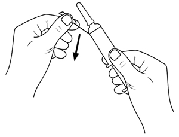 Внимание: не снимайте защитный колпачок до изгиба защитной этикетки! 2. 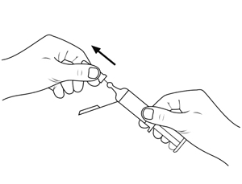 Снимите защитный колпачок. 3. 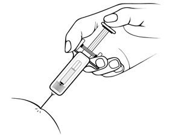 Сделайте инъекцию, как обычно. 4. 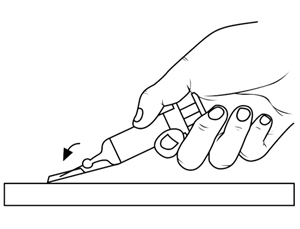 Внимание: не закрепляйте иглу в защитную этикетку пальцами! 5. 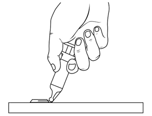 Согните защитную этикетку приблизительно на 90° до тех пор, пока игла со слышимым щелчком не окажется в пластиковой части защитной этикетки. 6. 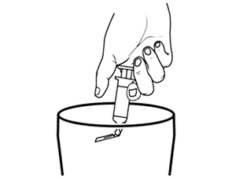 Утилизируйте одноразовый шприц с иглой в мусорный контейнер. Инструкция по использованию устройства предохранительного 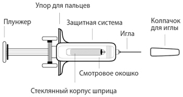 Внешний вид шприца перед применением 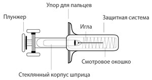 Внешний вид шприца после применения Не вскрывая упаковку, проверьте целостность шприца, а также отсутствие жидкости в контурной ячейковой упаковке. Если Вы сомневаетесь в целостности шприца или его герметичности, возьмите другую упаковку. Откройте контурную ячейковую упаковку. Проверьте содержание препарата в шприце. 1. 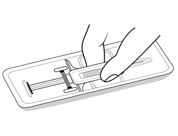 Внимание: Вынимая шприц из упаковки, не тяните шприц за плунжер или колпачок для иглы. Выньте шприц из упаковки, как показано на рисунке. 2. 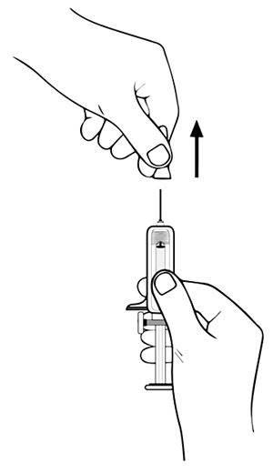 Внимание: Не снимайте колпачок иглы, держась за плунжер или основание иглы. Снимите колпачок иглы, как показано на рисунке, держась за защитную систему во избежание травмирования или изгиба иглы. 3. Сделайте инъекцию, как обычно. 4. Зажав корпус шприца между указательным и средним пальцами, надавите на плунжер вниз до упора, чтобы ввести весь раствор. Внимание: Раствор должен быть введен полностью для срабатывания защитной системы. 5. После завершения инъекции воспользуйтесь одним из предложенных вариантов: 1) Выньте иглу из места инъекции и отпустите плунжер. Дождитесь пока защитная система полностью закроет иглу. 2) Не вынимая иглу из места инъекции, отпустите плунжер. Дождитесь пока защитная система полностью закроет иглу. Внимание: Если защитная система не активировалась или активировалась частично – выбросите шприц с незащищенной иглой. Т.к. игла не защищена, обратите особое внимание на то, чтобы избежать травм. 6. 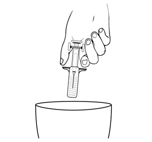 Выбросьте шприц с защищенной иглой в мусорный контейнер. Побочное действие
Использована следующая классификация нежелательных реакций в зависимости от частоты встречаемости: очень часто (≥1/10), часто (≥1/100, <1/10), нечасто (≥1/1000, <1/100), редко (≥1/10000, <1/1000), очень редко (<1/10000).
1 Геморрагические проявления чаще всего выявлялись у пациентов с другими факторами риска (см. разделы "Противопоказания" и "Взаимодействие с другими лекарственными средствами"). 2 В некоторых случаях происходит образование твердых узелков, не связанных с инкапсулированием гепарина. Эти узелки обычно исчезают через несколько дней после появления. 3 Кальциноз чаще встречается у пациентов с нарушением фосфорно-кальциевого обмена, например, у пациентов с хронической почечной недостаточностью. Противопоказания
С осторожностью
Применение при беременности и кормлении грудью
Беременность Опыты на животных не показали тератогенного или фетотоксического эффектов надропарина. Применение для профилактики в I триместре беременности Имеющихся клинических данных недостаточно для оценки возможного тератогенного и фетотоксического эффектов надропарина у человека при применении в профилактических дозах в I триместре беременности и в терапевтических дозах в течение всей беременности. Поэтому следует избегать применения препарата в профилактических дозах в I триместре беременности и в терапевтических дозах в течение всей беременности. Применение для профилактики во II и III триместрах беременности При применении надропарина в течение II и III триместра беременности у ограниченного числа пациенток не было выявлено признаков тератогенного и фетотоксического воздействия препарата. Однако для оценки влияния надропарина необходимы дальнейшие исследования. Поэтому применять препарат в профилактических дозах во II и III триместрах беременности следует только в случае необходимости. При необходимости применения эпидуральной анестезии рекомендуется приостановление профилактического лечения гепарином не менее чем за 12 ч до анестезии. Грудное вскармливание В настоящее время имеются лишь ограниченные данные по выделению надропарина с грудным молоком, хотя всасывание надропарина у новорожденных маловероятно. В связи с этим применение надропарина в период грудного вскармливания не противопоказано. Фертильность Данные клинических исследований о влиянии надропарина на фертильность отсутствуют. Особые указания
Гепарин-индуцированная тромбоцитопения (ГИТ) Поскольку при применении гепаринов существует возможность развития ГИТ, в течение всего курса лечения препаратом необходимо контролировать уровень тромбоцитов. Сообщалось о редких случаях ГИТ, в том числе тяжелой, которые могли быть связаны с артериальным или венозным тромбозами. Возможность развития ГИТ важно учитывать в следующих случаях:
В этих случаях необходимо немедленно организовать постоянный мониторинг уровня тромбоцитов. Применение надропарина при этом следует прекратить. Указанные эффекты имеют иммуноаллергическую природу и обычно отмечаются между 5-м и 21-м днем лечения, но могут возникать и раньше, если у пациента имелась ГИТ в анамнезе. Также сообщалось об отдельных случаях развития ГИТ после 21 дня лечения. При наличии ГИТ в анамнезе (на фоне обычных или низкомолекулярных гепаринов) лечение препаратом может быть назначено при необходимости. Однако в этой ситуации показаны строгий клинический мониторинг и, как минимум, ежедневное измерение числа тромбоцитов. При возникновении тромбоцитопении применение препарата следует немедленно прекратить. Если тромбоцитопения развивается на фоне лечения гепаринами (обычными или низкомолекулярными), следует рассмотреть возможность назначения антикоагулянтов других групп. Если другие препараты недоступны, а лечение антикоагулянтами необходимо продолжить, то возможно применение другого низкомолекулярного гепарина. В этом случае следует ежедневно наблюдать за числом тромбоцитов в крови и лечение должно быть прекращено как можно раньше, поскольку признаки исходной тромбоцитопении продолжают наблюдаться после замены препарата (см. раздел "Противопоказания"). Контроль агрегации тромбоцитов, основанный на тестах in vitro, имеет ограниченное значение при диагностике ГИТ. Следует проявлять осторожность при назначении препарата в следующих ситуациях, поскольку они могут быть связаны с повышенным риском кровотечения:
Лабораторный мониторинг Контроль уровня тромбоцитов у пациентов, получающих НМГ и имеющих факторы риска ГИТ Для своевременного обнаружения ГИТ в ходе лечения оптимально проводить мониторинг состояния пациентов следующим образом. После хирургического вмешательства или травмы (за последние 3 месяца): при применении надропарина с целью лечения или профилактики необходим регулярный биологический мониторинг, т.к. заболеваемость ГИТ у таких пациентов составляет 0.1% и даже >1%. Определение концентрации тромбоцитов необходимо проводить:
При отсутствии хирургического вмешательства или травмы за последние 3 месяца: при применении надропарина с целью лечения или профилактики регулярный биологический мониторинг необходим в следующих случаях:
В остальных случаях, ввиду низкой заболеваемости ГИТ (<0.1%), определение концентрации тромбоцитов необходимо проводить:
Возможность развития ГИТ следует рассмотреть при снижении содержания тромбоцитов до уровня <150000 мм3 (150×109/л) или на 30-50% по сравнению с исходным значением. При легкой почечной недостаточности (КК ≥50 мл/мин) нет необходимости снижать дозу надропарина. Любое значительное снижение уровня тромбоцитов (на 30-50% от исходного значения) требует срочного внимания еще до того, как уровень достигнет критического порогового значения. В случае снижения тромбоцитов необходимо: 1) немедленно оценить динамику тромбоцитопении; 2) прекратить применение гепарина, если подтверждено продолжающееся снижение уровня тромбоцитов при отсутствии других очевидных причин тромбоцитопении; 3) провести профилактику или лечение тромботического осложнения ГИТ. Если необходимо дальнейшее лечение антикоагулянтами, следует заменить гепарин антикоагулянтом другого класса в профилактической или терапевтической дозе в зависимости от ситуации. В случае замены гепарина на антагонисты витамина К (АВК) последние следует назначать только после нормализации уровня тромбоцитов, т.к. в противном случае существует риск усиления тромботического эффекта. Замена гепарина антагонистами витамина К Необходимо обеспечить тщательный клинический и лабораторный мониторинг (протромбиновое время по Квику и МНО) для контроля за действием АВК. Т.к. полное действие антагонистов витамина К проявляется по истечении некоторого периода времени, следует продолжать введение гепарина в эквивалентной дозе, пока это необходимо для достижения уровня МНО, допустимого при данном показании, при двух последовательных измерениях. Особые группы пациентов Пациенты с почечной недостаточностью Т.к. надропарин в основном выводится почками, то это приводит к уменьшению экскреции надропарина у пациентов с почечной недостаточностью (см. раздел "Фармакокинетика" - Пациенты с почечной недостаточностью). Поэтому у такой группы пациентов присутствует больший риск кровотечения и требуется большая осторожность при лечении. Решение об уменьшении или сохранении дозы для пациента с КК от 30 до 50 мл/мин принимается врачом, который должен оценить индивидуальный риск кровотечения для пациента по сравнению с риском развития тромбоэмболии (см. раздел "Режим дозирования"). Пациенты пожилого возраста Перед началом лечения препаратом необходимо оценить функцию почек (см. раздел "Противопоказания"). Гиперкалиемия Гепарины могут подавлять секрецию альдостерона, что может привести к гиперкалиемии, особенно у пациентов с повышенным калием в крови или у пациентов с риском повышения содержания калия в крови, например, пациенты с сахарным диабетом, хронической почечной недостаточностью, метаболическим ацидозом или у пациентов, принимающих препараты, которые могут вызывать гиперкалиемию (например, ингибиторы АПФ, НПВП). Риск гиперкалиемии повышается при длительной терапии, но обычно обратим при отмене. У пациентов, находящихся в группе риска, следует контролировать уровень калия в крови. Спинальная/эпидуральная анестезия/спинномозговая пункция и сопутствующие лекарственные препараты Риск возникновения спинальных/эпидуральных гематом после использования надропарина, приводящих к неврологическим расстройствам, в т.ч. длительным или постоянным параличам, повышается у пациентов с установленными эпидуральными катетерами или сопутствующим применением других лекарств, которые могут повлиять на гемостаз, таких как НПВП, антиагрегантные средства или другие антикоагулянты. Риск также увеличивается при проведении травматичных или повторных эпидуральных или спинномозговых пункций. Поэтому вопрос о комбинированном применении нейроаксиальной блокады и антикоагулянтов должен решаться индивидуально после оценки соотношения польза/риск в следующих ситуациях:
Если пациенту проводится люмбальная пункция или спинальная или эпидуральная анестезия, следует соблюдать интервал минимум 12 ч между введением препарата в профилактических дозах или 24 ч в терапевтических дозах и введением или удалением спинального/эпидурального катетера или иглы. Для пациентов с почечной недостаточностью могут рассматриваться более длительные интервалы. Необходимо тщательное наблюдение за пациентом с целью выявления признаков и симптомов неврологических нарушений, таких как боль в спине, сенсорные или двигательные нарушения (онемение или слабость нижних конечностей), проблемы с мочевым пузырем и/или кишечником. Пациентов следует проинструктировать о необходимости информирования врача при появлении неврологических симптомов. При обнаружении нарушений в неврологическом статусе пациента требуется срочная соответствующая терапия, включая декомпрессию спинного мозга. Салицилаты, НПВП и антиагрегантные средства При профилактике или лечении венозных тромбоэмболий, а также при профилактике свертывания крови в системе экстракорпорального кровообращения при гемодиализе не рекомендуется совместное назначение с такими препаратами как ацетилсалициловая кислота, другие салицилаты, НПВП и антиагрегантные средства, т.к. это может увеличить риск развития кровотечений. Если таких комбинаций нельзя избежать, необходимо проводить тщательное клиническое и биологическое наблюдение. В клинических исследованиях у пациентов с нестабильной стенокардией и инфарктом миокарда без повышения зубца Q надропарин применялся в комбинации с ацетилсалициловой кислотой в дозах, не превышающих 325 мг/сут (см. раздел "Режим дозирования"). Некроз кожи О кожных некрозах сообщалось очень редко. Этому предшествовали пурпура или инфильтрованные или болезненные эритематозные пятна с присутствием или отсутствием общих признаков. В таких случаях лечение должно быть немедленно прекращено. Пациенты с механическими клапанными протезами (включая беременных женщин) Применение надропарина кальция для профилактики тромбообразования у пациентов с механическими искусственными клапанами сердца изучено недостаточно. В связи с невозможностью оценить эффективность и безопасность применение препарата для снижения риска тромбозов и эмболий у пациентов с механическими искусственными клапанами сердца не рекомендуется. Беременные женщины с механическими искусственными клапанами сердца имеют риск развития тромбозов и эмболий. Имеющийся ограниченный опыт применения надропарина кальция не позволяет рекомендовать применение препарата для снижения риска тромбозов и эмболий у беременных женщин с механическими искусственными клапанами сердца. Низкая масса тела Перед началом лечения препаратом необходимо оценить функцию почек (см. раздел "Пациенты с почечной недостаточностью"). Пациенты с ожирением У пациентов с ожирением существует повышенный риск возникновения тромбоэмболических осложнений. Безопасность и эффективность профилактических доз препарата не полностью оценены у пациентов с ожирением (ИМТ более 30 кг/м2) и рекомендации по подбору дозы отсутствуют. Поэтому рекомендуется наблюдение данных пациентов на предмет появления признаков и симптомов тромбоэмболических осложнений. Использование в педиатрии В настоящее время недостаточно клинических данных об эффективности и безопасности применения препарата у пациентов до 18 лет, в связи с чем назначение препарата детям и подросткам не рекомендуется. Вспомогательные вещества Данный препарат содержит менее 1 ммоль (23 мг) натрия на один шприц (одну ампулу), то есть по сути не содержит натрия. Влияние на способность к управлению транспортными средствами и механизмами Нет данных о влиянии препарата на способность управлять транспортными средствами и механизмами. Передозировка
Симптомы: основным клиническим признаком передозировки при п/к или в/в введении является кровотечение. Необходимо следить за числом тромбоцитов и другими параметрами свертывающей системы крови. Незначительные кровотечения не требуют специальной терапии: обычно достаточно бывает снизить или ввести позже последующую дозу препарата. Лечение: рассматривать назначение протамина сульфата необходимо только в тяжелых случаях передозировки. Протамина сульфат оказывает выраженное нейтрализирующее действие по отношению к антикоагулянтным эффектам гепарина, однако некоторая анти-Ха активность надропарина сохраняется. 0.6 мл протамина сульфата нейтрализует около 950 анти-Ха МЕ надропарина. Доза протамина сульфата рассчитывается с учетом времени, прошедшего после введения гепарина, с возможным снижением дозы антидота. Лекарственное взаимодействие
Применение некоторых препаратов и классов препаратов увеличивает риск развития гиперкалиемии. К таким препаратам относятся: соли калия, калийсберегающие диуретики, ингибиторы АПФ, блокаторы рецепторов ангиотензина II, НПВП, гепарины (низкомолекулярные или нефракционированные), циклоспорин и такролимус, триметоприм. Развитие гиперкалиемии может зависеть от сочетания нескольких факторов риска. При комбинации перечисленных выше препаратов с надропарином повышается риск развития гиперкалиемии. Нерекомендуемые комбинации Применение надропарина не рекомендуется пациентам, принимающим другие препараты, которые могут увеличить риск кровотечения:
Совместное применение надропарина с данными препаратами повышает риск развития кровотечений, т.к. салицилаты и НПВП угнетают активность тромбоцитов и отрицательно воздействуют на слизистую желудка и двенадцатиперстной кишки. Для обезболивания и снижения температуры следует применять препараты, не содержащие салицилатов (например, парацетамол). В ходе клинических исследований при лечении нестабильной стенокардии и инфаркта миокарда без зубца Q надропарин применяли в комбинации с аспирином в дозах, не превышающих 325 мг/сут. При необходимости совместного применения надропарина с НПВП следует обеспечить тщательный клинический мониторинг. Совместное применение надропарина с декстраном 40 (для парентерального применения) повышает риск развития кровотечений, поскольку декстран 40 угнетает активность тромбоцитов. Комбинации, которые следует применять с осторожностью Следует с осторожностью назначать надропарин пациентам, принимающим пероральные антикоагулянты, т.к. такое сочетание приводит к взаимному усилению эффекта. При замене надропарина пероральным антикоагулянтом следует обеспечить усиленное клиническое наблюдение и продолжать применение надропарина до стабилизации МНО до требуемого значения. Комбинации, которые следует принимать во внимание Совместное применение надропарина с препаратами, влияющими на гемостаз на различных уровнях, повышает риск кровотечений. Таким образом, у пациентов всех возрастов совместное применение НМГ в терапевтических дозах с антикоагулянтами для перорального применения, антиагрегантами (абциксимаб, НПВП, ацетилсалициловая кислота, клопидогрел, эптифибатид, илопрост, тиклопидин, тирофибан) и тромболитиками требует тщательного клинического наблюдения и лабораторного мониторинга. |
||||||||||||||||||||||||||||||||||||||||||||||||||||||||||||||||||||||||||||||||||||||||||||||||||||||||||||||||||||||||||||||||||||||||||||
Вернуться наверх |
||||||||||||||||||||||||||||||||||||||||||||||||||||||||||||||||||||||||||||||||||||||||||||||||||||||||||||||||||||||||||||||||||||||||||||
Copyright © Справочник Видаль «Лекарственные препараты в России», Москва, Россия